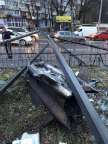

<!DOCTYPE html>
<head>    
    <meta http-equiv="content-type" content="text/html; charset=UTF-8" />
    
        <script>
            L_NO_TOUCH = false;
            L_DISABLE_3D = false;
        </script>
    
    <script src="https://cdn.jsdelivr.net/npm/leaflet@1.5.1/dist/leaflet.js"></script>
    <script src="https://code.jquery.com/jquery-1.12.4.min.js"></script>
    <script src="https://maxcdn.bootstrapcdn.com/bootstrap/3.2.0/js/bootstrap.min.js"></script>
    <script src="https://cdnjs.cloudflare.com/ajax/libs/Leaflet.awesome-markers/2.0.2/leaflet.awesome-markers.js"></script>
    <link rel="stylesheet" href="https://cdn.jsdelivr.net/npm/leaflet@1.5.1/dist/leaflet.css"/>
    <link rel="stylesheet" href="https://maxcdn.bootstrapcdn.com/bootstrap/3.2.0/css/bootstrap.min.css"/>
    <link rel="stylesheet" href="https://maxcdn.bootstrapcdn.com/bootstrap/3.2.0/css/bootstrap-theme.min.css"/>
    <link rel="stylesheet" href="https://maxcdn.bootstrapcdn.com/font-awesome/4.6.3/css/font-awesome.min.css"/>
    <link rel="stylesheet" href="https://cdnjs.cloudflare.com/ajax/libs/Leaflet.awesome-markers/2.0.2/leaflet.awesome-markers.css"/>
    <link rel="stylesheet" href="https://rawcdn.githack.com/python-visualization/folium/master/folium/templates/leaflet.awesome.rotate.css"/>
    <style>html, body {width: 100%;height: 100%;margin: 0;padding: 0;}</style>
    <style>#map {position:absolute;top:0;bottom:0;right:0;left:0;}</style>
    
            <meta name="viewport" content="width=device-width,
                initial-scale=1.0, maximum-scale=1.0, user-scalable=no" />
            <style>
                #map_35e7b192f95e41ce860f860043f86c3b {
                    
                    width: 100.0%;
                    height: 100.0%;
                    left: 0.0%;
                    top: 0.0%;
                }
            </style>
        
</head>
<body>    
    
            <div class="folium-map" id="map_35e7b192f95e41ce860f860043f86c3b" ></div>
        
</body>
<script>    
    
            var map_35e7b192f95e41ce860f860043f86c3b = L.map(
                "map_35e7b192f95e41ce860f860043f86c3b",
                {
                    center: [49.4831677, 33.9532565],
                    crs: L.CRS.EPSG3857,
                    zoom: 7,
                    zoomControl: true,
                    preferCanvas: false,
                }
            );

            

        
    
            var tile_layer_6ce7230faae94d6e9c2d3319d024eb2c = L.tileLayer(
                "https://{s}.tile.openstreetmap.org/{z}/{x}/{y}.png",
                {"attribution": "Data by \u0026copy; \u003ca href=\"http://openstreetmap.org\"\u003eOpenStreetMap\u003c/a\u003e, under \u003ca href=\"http://www.openstreetmap.org/copyright\"\u003eODbL\u003c/a\u003e.", "detectRetina": false, "maxNativeZoom": 18, "maxZoom": 18, "minZoom": 0, "noWrap": false, "opacity": 1, "subdomains": "abc", "tms": false}
            ).addTo(map_35e7b192f95e41ce860f860043f86c3b);
        
    
            var marker_561ebda602b44aec981e98fc27c0f6a0 = L.marker(
                [50.546998, 30.152676],
                {}
            ).addTo(map_35e7b192f95e41ce860f860043f86c3b);
        
    
        var popup_3ba253b2a4e94acb9ef7170d97653139 = L.popup({"maxWidth": "100%"});

        
            var html_c65982efc29249c99764604f8eb583d9 = $(`<div id="html_c65982efc29249c99764604f8eb583d9" style="width: 100.0%; height: 100.0%;">Градами обстріляниий дитячий будинок у Ворзелі</div>`)[0];
            popup_3ba253b2a4e94acb9ef7170d97653139.setContent(html_c65982efc29249c99764604f8eb583d9);
        

        marker_561ebda602b44aec981e98fc27c0f6a0.bindPopup(popup_3ba253b2a4e94acb9ef7170d97653139)
        ;


        var marker_561ebda602b44aec981e98fc27c0f6a0 = L.marker(
                [50.087890, 36.246300],
                {draggable: true},
            ).addTo(map_35e7b192f95e41ce860f860043f86c3b)
            .bindPopup ("<h3> 25.02.2022 Харків</h3><p>На харківському напрямку знищено російські ракетні системи (ГРАД)</p>")
            .openPopup;


            var marker_561ebda602b44aec981e98fc27c0f6a0 = L.marker(
                [50.396069, 30.506262],
                {draggable: true},
            ).addTo(map_35e7b192f95e41ce860f860043f86c3b)
            .bindPopup ("<h3> 24.02.2022 Київ </h3><p>У Києві на вулиці Васильківській, 3 (біля станції метро “Голосіївська”)пошкоджено житлові будівлі.Руйнування зчинили крилата авіаційна ракета Х-31 ЗС Росії.</p>")
            .openPopup;


            var marker_561ebda602b44aec981e98fc27c0f6a0 = L.marker(
                [49.9996179, 36.2888141],
                {draggable: true},
            ).addTo(map_35e7b192f95e41ce860f860043f86c3b)
            .bindPopup ("<h3> 25.02.2022 Харків </h3><p>Російська ракета у жилому масиві у Харкові</p>")
            .openPopup;

            var marker_561ebda602b44aec981e98fc27c0f6a0 = L.marker(
                [50.546998, 30.152676],
                {draggable: true},
            ).addTo(map_35e7b192f95e41ce860f860043f86c3b)
            .bindPopup ("<h3> 25.02.2022 Харків</h3><p>Градами обстріляниий дитячий будинок у Ворзелі</p>")
            .openPopup;


            var marker_561ebda602b44aec981e98fc27c0f6a0 = L.marker(
                [50.9191557, 29.9019675],
                {draggable: true},
            ).addTo(map_35e7b192f95e41ce860f860043f86c3b)
            .bindPopup ("<h3> 24.02.2022 Іванків</h3><p>Взорваний міст на підступах до Києва для запобігання наступу ворожої техніки</p>")
            .openPopup;


            var marker_561ebda602b44aec981e98fc27c0f6a0 = L.marker(
                [50.4804555, 30.4793710],
                {draggable: true},
            ).addTo(map_35e7b192f95e41ce860f860043f86c3b)
            .bindPopup ("<h3> 25.02.2022 Київ</h3><p>Знищена ворожа бойова група у центрі Києва</p>")
            .openPopup;


            var marker_561ebda602b44aec981e98fc27c0f6a0 = L.marker(
                [50.5205192, 30.4949952],
                {draggable: true},
            ).addTo(map_35e7b192f95e41ce860f860043f86c3b)
            .bindPopup ("<h3> 25.02.2022 Київ</h3><p>Російські війська у Оболонському районі Києва</p>")
            .openPopup;


            var marker_561ebda602b44aec981e98fc27c0f6a0 = L.marker(
                [46.6628302, 32.7208010],
                {draggable: true},
            ).addTo(map_35e7b192f95e41ce860f860043f86c3b)
            .bindPopup ("<h3> 25.02.2022 Херсон </h3><p>Російський танк біля міста Херсон на півдні України</p>", {maxHeight: 700, minWidth:400})
            .openPopup;


            var marker_561ebda602b44aec981e98fc27c0f6a0 = L.marker(
                [50.5899820, 30.2105812],
                {draggable: true},
            ).addTo(map_35e7b192f95e41ce860f860043f86c3b)
            .bindPopup ("<h3> 24.02.2022 Гостомель </h3><p>Російські війська у місті Гостомель</p>", {maxHeight: 700, minWidth:400})
            .openPopup;

;


           
    
</script>